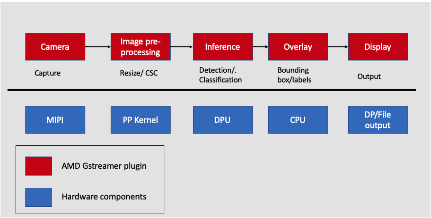

Adding ML Inference Pipeline¶
Introudction¶
In this step, we will build the smart camera application by adding an ML pipeline to the existing Image resizing application. The Smart camera VVAS ML pipeline has built-in machine learning for applications such as pedestrian detection, face detection, and people counting with local display.The ML pipeline consists of ML Inference and ML overlay. The ML inference is performed by the DPU, a hardware component, and an ML overlay , is performed on the CPU by a VVAS software plugin.

Adding the hardware ML pipeline to the Image resizing application involves the following steps:
Adding quantization function to the pre-processing pipeline
Adding the Vitis AI DPU to the hardware pipeline.
Overview of VVAS Plugins used for smart camera
Petalinux firmware.
Run the design on the board.
Machine Learning Pre-processing¶
In machine learning, data preprocessing is integral in converting input data into a clean data set. A machine learning application receives data from multiple sources using multiple formats; this data needs to be transformed into a format feasible for analysis before being passed to an AI model. The Xilinx Vitis Vision accelerated library can help users preprocess image data before being fed to different deep neural networks (DNNs).
An ML pre-processing pipeline would involve the following:
CSC converts the incoming images from one color space to another. One example would be converting the NV12 image from a webcam to the RGB/BGR format expected by the neural network.
Resizing the image changes the resolution of the input image to match the resolution used to train the network.
Additional preprocessing computations such as subtraction, scaling, and threshold calculation.
Pre-processing function¶
In the previous step, the CSC and resize kernel have been built as part of the Image resizing application. In this step, we will add the pre-processing kernel, which performs quantization. Navigate to “kv260/overlays/examples/smartcam” and replace the “xf_pp_pipeline_accel.cpp” with the ml_pre-processing kernel, which performs CSC, resizing and scaling and mean subtraction.
cd kria_platform/kria-vitis-platforms/kv260/overlays/examples/smartcam/
cp ../../../../../../code_repo_kria_vitis_acceleration_flow_2022.1/ml_inference/vitis_platform_files/xf_pp_pipeline_accel.cpp .
Vitis vision library provides a pre-processing function to perform quantization
template <int INPUT_PTR_WIDTH, int OUTPUT_PTR_WIDTH, int T_CHANNELS , int CPW, int ROWS, int COLS, int NPC, bool PACK_MODE, int X_WIDTH, int ALPHA_WIDTH, int BETA_WIDTH, int GAMMA_WIDTH, int OUT_WIDTH, int X_IBITS, int ALPHA_IBITS, int BETA_IBITS, int GAMMA_IBITS,int OUT_IBITS, bool SIGNED_IN, int OPMODE, int UTH, int LTH>
void preProcess(ap_uint<INPUT_PTR_WIDTH> *inp, ap_uint<OUTPUT_PTR_WIDTH> *out, float params[3*T_CHANNELS], int rows, int cols)
Combining all the previous steps with the pre-processing function would be the following:
#pragma HLS DATAFLOW
obj_iny.Array2xfMat<INPUT_PTR_WIDTH, XF_8UC1, HEIGHT, WIDTH, NPC>(img_inp_y, imgInput_y, in_img_linestride);
obj_inuv.Array2xfMat<INPUT_PTR_WIDTH, XF_8UC2, HEIGHT/2, WIDTH/2, NPC> (img_inp_uv, imgInput_uv, in_img_linestride/2);
xf::cv::nv122bgr<XF_8UC1, XF_8UC2, XF_8UC3, HEIGHT, WIDTH, NPC, NPC>(imgInput_y, imgInput_uv, rgb_mat);
xf::cv::resize<INTERPOLATION, IN_TYPE, HEIGHT, WIDTH, NEWHEIGHT, NEWWIDTH, NPC, MAXDOWNSCALE>(rgb_mat, resize_out_mat);
xf::cv::preProcess<IN_TYPE, OUT_TYPE, NEWHEIGHT, NEWWIDTH, NPC, WIDTH_A, IBITS_A, WIDTH_B, IBITS_B, WIDTH_OUT,IBITS_OUT>(resize_out_mat, out_mat, params);
xf::cv::xfMat2Array<OUTPUT_PTR_WIDTH, OUT_TYPE, NEWHEIGHT, NEWWIDTH, NPC>(out_mat, img_out, out_img_linestride);
Next steps¶
This completes the ML pre-processing kernel. The next step is the Adding DPU IP.